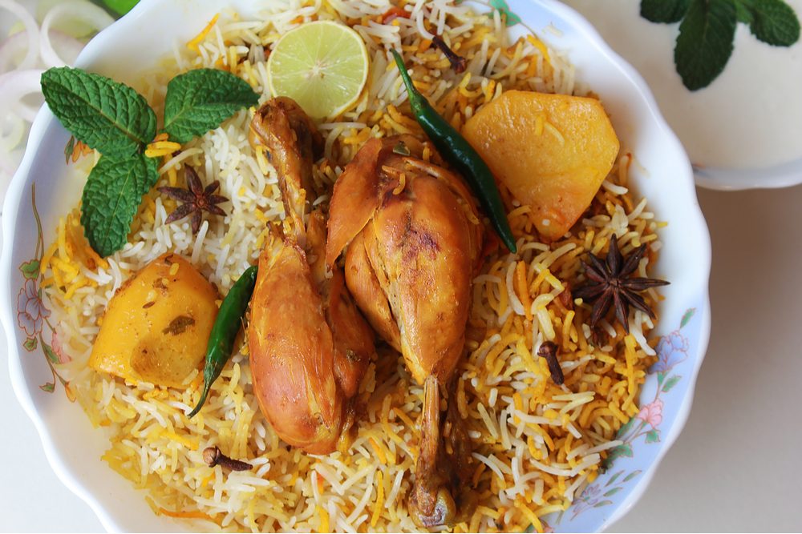
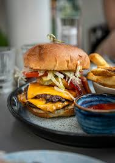
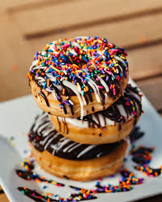

Food Recipe Card







Chicken Biryani:
Chicken Biryani Ingredient:
- 1-Kg Chicken: Bone-in pieces.
- 1-Kg Basmati Rice: Aged, long-grain basmati rice.
- 1-CupYogurt: Plain, full-fat yogurt (or curd) to tenderize the chicken .
- 1-spoone Ginger-Garlic Paste: Freshly crushed or ground ginger and garlic.
- Whole Spices: Bay leaves, green and black cardamoms, cinnamon sticks and cloves.
- Spice Powders: Ground coriander, cumin, turmeric, red chili powder and salt.
- 4 medium Onions: Sliced thin and fried in oil until crispy and golden brown.
- 1-Cup Ghee/Oil: Clarified butter (ghee)
- 2-Tea spoone Lemon Juice: Adds brightness and cuts through the richness of the meat.
Chicken Biryani Making:
To make authentic Chicken Biryani, marinate bone-in chicken in yogurt, ginger-garlic paste, lemon juice, and a blend of ground spices for at least thirty minutes, then sear and simmer the meat in a heavy-bottomed pot alongside thinly sliced, golden-fried onions until a rich, thick gravy forms and the chicken is nearly cooked through.
In a separate pot, boil aged Basmati rice with whole aromatics like cardamom, cinnamon, and cloves until it is seventy percent cooked, then drain the grains and layer them evenly on top of the chicken base.
Finish the dish by garnishing the rice layer with crispy fried onions, fresh chopped mint, cilantro, a drizzle of ghee, and saffron-infused milk, then seal the pot tightly to steam on low heat for twenty minutes using the Dum method, allowing the flavors to fuse completely before gently fluffing and serving.
Seekh Kabab:
Seekh Kabab Ingredient:
- 1-Kg Minced Meat (Keema): Ground beef, lamb, or chicken.
- 2-Egg (Optional): Sometimes used to help bind the mixture.
- Binding Agent:besan and cornflour to absorb excess moisture so the kababs hold their shape.
- 2-Mediun Onion: Finely chopped and squeezed to remove all excess liquid
- 1-Tea spoone Garlic and Ginger: Freshly crushed or made into a paste.
- 4-Long Green Chilies: Finely chopped for a kick of heat.
- Seekh kabab Masla: To abb the bestest taste in kababs
Seekh Kabab Making:
To make seekh kababs, thoroughly knead minced meat with squeezed chopped onions, ginger-garlic paste, green chilies, fresh mint,roasted chickpea flour,and garam masala, cumin, coriander, red chili, and salt until the mixture becomes smooth and sticky.
After chilling the mixture in the refrigerator for at least an hour to firm up, take golf-ball-sized portions and mold them evenly onto metal or wooden skewers into long, cylindrical shapes using wet or oiled hands.
Finally, grill the kababs over hot charcoal, bake them in a hot oven, or shallow-fry them in a pan for 8 to 12 minutes, turning frequently and basting with ghee or butter, until the meat is fully cooked through and beautifully browned on all sides.
Chapli Kabab:
Chapli Kabab Ingredient:
- Minced Meat (Qeema): 1 kg of beef, mutton, or chicken.
- Red Onion: 1 large, very finely chopped
- Tomato: 1 to 2 small Roma tomatoes, deseeded and very finely diced.
- Green Chilies: 3 to 4, finely minced
- Ginger & Garlic: 1 tbsp each, freshly minced or pasted
- Egg: 1 to 2 (whisked).
- Whole SpicesCoriander Seeds,Cumin Seeds,Red Chili Flakes,Carom Seeds (Ajwain),Ground Black Pepper and Salt.
Chapli Kabab Making:
To make authentic Chapli Kababs, mix finely minced meat chopped onions, deseeded diced tomatoes, green chilies, coriander leaves, mint, ginger, and garlic paste. Season the mixture with roasted crushed coriander and cumin seeds, crushed dry pomegranate seeds (anardana), red chili flakes, black pepper, and salt.
Add a beaten egg and corn or wheat flour to bind the ingredients, then thoroughly knead the mixture for several minutes until it becomes sticky and uniform.Cover and refrigerate the meat for at least 30 minutes to let the flavors marinate.
Finally, shape the mixture into thin, large patties—traditionally placing a thin tomato slice on top—and shallow fry them in hot oil, ghee, or beef tallow on medium heat for 3 to 4 minutes per side until the edges turn golden and crispy while the center stays juicy.
Gol Gappy:
Gol Gappa Ingredient:
- Semolina (Suji): 1 cup, coarse variety.
- Plain Flour (Maida): 2 tablespoons.
- Oil: 3 tablespoons.
- Warm Water: About half cup.
- Potatoes: 2-3, boiled.
- Chickpeas: 0.5 cup of dry kala chana.
- Spices:chaat masala,black pepper powder and roasted cumin powder.
Gol Gappa Making:
To make golgappas, start by kneading a firm dough from semolina, plain flour, a little oil, and warm water; let it rest, then roll it thin, cut into small discs, and deep-fry them until they puff up into crispy, golden-brown shells.
Next, prepare the filling by mashing boiled potatoes and mixing them with cooked chickpeas, chopped onions, chaat masala, cumin powder, and chili powder.
For the liquid elements, blend fresh mint, coriander, green chilies, ginger, lemon juice, and black salt with chilled water to create the spicy tikha pani, and separately mix tamarind paste, sweet jaggery, and roasted cumin with water for the sweet meetha pani.
To serve, gently poke a hole in the top of a crispy shell, stuff it with a spoonful of the potato mixture, pour in both the sweet and spicy waters, and eat it immediately in one bite.
Beef Smash Burger:
Beef Smash Burger Ingredient:
- Ground Beef: lean-to-fat ratio.
- Seasoning:salt and freshly ground black pepper
- Cheese: 4 slices
- Buns: 4
- Butter: 2 Tablespoon
Smash Beef Burger Making:
To make a smash burger, heat a dry cast-iron skillet or griddle over high heat until smoking, then place a 2 to 3-ounce unseasoned ground beef ball onto the hot surface. Immediately press down with a heavy spatula and parchment paper, using maximum force for 10 seconds to flatten the patty completely and create thin, lacy edges.
Season the patty generously with salt and pepper, let it sear undisturbed for about 2 minutes until a deep, caramelized crust forms, then scrape under the patty cleanly to flip it.
Immediately place a slice of cheese on top, toast your buttered potato bun right next to the meat, and cook for just 1 more minute until the cheese melts before stacking the patty onto the bun with your favorite sauce and toppings.
Mac And Cheese:
Mac And Cheese Ingredient:
- Pasta:elbow macaroni or medium shells.
- Butter: 8 Tbsp.
- Flour: 1 cup all-purpose flour.
- Milk: 4 cups whole milk.
- Cheese: 3 cups.
- Spices: Garlic powder,paprika,black pepper and Salt.
Mac And Cheese Making:
To make homemade mac and cheese, boil the pasta in salted water until al dente, drain, and set aside. Next, melt the butter in a large saucepan over medium heat, whisk in the flour, and cook for 1 minute to create a roux.
Gradually pour in the warm milk while whisking constantly, and let the mixture simmer for a few minutes until it thickens into a smooth sauce.
Remove the pan from the heat, stir in your spices, and mix in the shredded cheddar and Parmesan until completely melted.
Finally, dump the cooked pasta into the cheese sauce, stir thoroughly until every noodle is evenly coated, and serve hot.
pan Cakes:
Pan Cakes Ingredient:
- All-purpose flour:1 Cup.
- Baking powder:2 Teaspoons.
- Suger:2 tablespoons.
- Milk:1 Cup.
- Butter:2 Tablespoons.
- Egg: 2.
Pan Cakes Making:
To make the pancakes, whisk the flour, baking powder, sugar, and salt together in a large bowl, then create a well in the center to pour in the milk, melted butter, and egg. Stir the mixture gently until it is just combined, leaving small lumps in the batter so the pancakes stay fluffy.
Next, heat a lightly oiled frying pan or griddle over medium-high heat and pour one-quarter cup of batter for each pancake.
Cook until bubbles form on the surface and pop, then flip with a spatula and cook the other side until it turns golden brown.
Donut:
Donut Ingredient:
- Flour: 4 to 5 cups of all-purpose flour.
- Milk:1 to 1.5 cup warm.
- Yeast:1 Teaspoon.
- Butter:4 Teaspoons.
- Egg: 2 large.
- Frostings & Coating:Melted Chocalate, cinnamon sugar, or cocoa powder.
Donut Making:
To make homemade donuts, activate yeast in warm milk with sugar, then mix in flour, eggs, melted butter, and spices until a smooth dough forms.
After letting the dough rise until doubled in size, roll it out to a half-inch thickness, cut it into donut shapes, and let them rise a second time for about 30 minutes.
Finally, deep-fry the dough shapes in vegetable oil for roughly one minute per side until golden brown, drain them briefly on paper towels, and immediately dip them into your preferred glaze or topping while still warm.